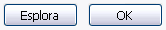
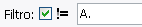
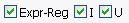
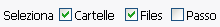

Premi sugli oggetti! Se evidenziati (colorate secondo il tema del tuo sistema), questo significa che sono selezionati.
Il pannello selettore è usato per selezionare quali fales o cartelle saranno rinominate.
Per selezionare o deselezionare oggetti:
Premi sugli oggetti! Se evidenziati (colorate secondo il tema del tuo sistema), questo significa che sono selezionati.

Usa il pulsante Esplora per aprire la finestra di esplorazione delle finestre.
Usa il pulsante OK se incolli o digiti il percorso.
In entrambi i casi, il contenuto della cartella apparirà nella area di selezione.

I filtri permettono di mostrare solo quegli oggetti che ti interessano,
rendendo la selezione più semplice.
Solo gli oggetti contenenti il testo inserito nel box di testo Filtro saranno mostrati. Per cercare per tipo
usa '.', es.: '.jpg' mostrerà solo le immagini compressi usando il jpg.
!= (non uguale) è un modificatore negativo, in altre parole se è azionato solo gli oggetti che
NON contengono il Filtro saranno mostrati.

Puoi anche filtrare usando le espressioni regolari.

Con Cartelle selezionato vengono mostrate le sottocartelle che ci sono nella cartella selezionata.
Con Files selezionato vengono mostrate i files che vi sono nella cartella selezionata.
Con Passo verranno visualizzati tutti anche tutti i files che sono contenuti nelle sottocartelle. Quindi se tu selezioni il root di un drive (come C:\), tutti i files in quel drive saranno mostrati! In ogni caso non sarai in grado di rinominare le cartelle.

I pulsanti tutti e nessuno permettono di selezionare tutti o nessun oggetto invece di dover selezionare o deselezionare i files uno a uno.